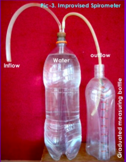
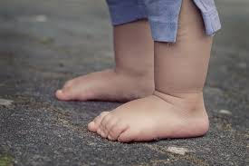
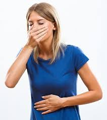
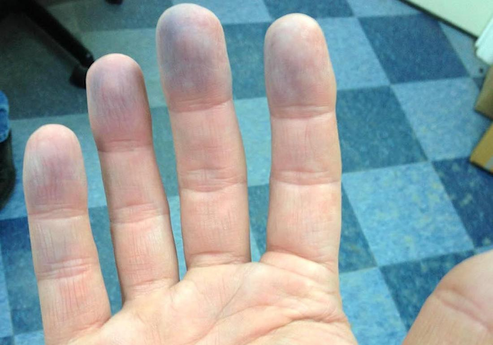

We know not everyone has access to medical facilities and other amenities during this period, but we have some solutions to test for the symptoms of coronavirus.
These can be administered at home, with materials that are sure to be found in everyone's pantries.
We recommend taking these tests twice, once when you are sure that you do not have the disease, and once when you suspect that you are displaying a symptom.
*Disclaimer: This is not a test of whether you have Coronavirus or not.
These are simple tests to see if you demonstrate any of the symptoms.
We are not medically advising, diagnosing or prognosticating anything.*
According to the United States Centers for Disease Control and Prevention (CDC), trouble breathing is an "emergency warning sign for COVID-19", and requires immediate medical attention.
A spirometer is a device that can help you measure your lung capacity.
You can make a DIY spirometer using only two water bottle, a straw, and water.
We also suggest taking this test as soon as possible (when you are sure you do not have the virus),
so when you take the test in order to check for symptoms, you will have a value to compare it with.
Take water bottle filled to the brim with water.
Cut a tiny hole in the bottle cap just enough for a straw (S1) to fit in.
Make sure the hole isn't too big, otherwise air will escape, giving you an incorrrect value.
Make another hole for another straw (S2) in the same cap.
Connect S2 to another bottle, so that the displaced water can be safely transferred.
Now, take a deep breath and blow into S1, until you have run out of breath.
The volume of water displaced is the volume of your lungs (your lung capacity).

Here is a table with the average lung capacities for humans.
Compare the value you got with the values in the table, and assess whether your lung capacity is normal or not.
Category
Average Lung Volume (litres)
Average Breaths per minute
Adult Men
6
12-20
Adult Women
4.2
12-20
Children
2-5
30-60
There is also a direct relationship between height of the person, height of altitude, and fitness of the person with the depth of breathing.
That is, the taller and fitter you are, and at a higher altitude, the larger lung volume you will have. Hence, don't be too worried if your lung capacity doesn't match up with the average lung capacity.
Checking Breathing Normality
Researchers have also found that when you have an infection like coronavirus - one that attacks your lungs- it causes your breath to come out ragged.
So, researchers at the University of Cambridge have created an app that listens to your "breathing sounds" and tells you if your lungs are fine.
The app above takes data from people’s voices in order to determine speech patterns unique to COVID-19 patients.
You can check this app out here.
A loss of smell - or anosmia - doesn't necessarily mean you have coronavirus, but it's one of the symptoms that are becoming more ubiquitous.
According to researchers, the amount of swelling that can occur in the nose from the effect of the virus can prevent
the smell particles from getting all the way up to the top of the nose where the olfactory nerve is. So when the swelling reduces, smell can return.
One way to test for anosmia is the "jellybean test". Take a jellybean, and eat it while closing you nose.
You will most likely taste the sour or the sweet, but you won't be able to identify the exact flavour of the jellybean.
However, if you now release your nose, you should be able to identify the flavour because of the smell. The sense of smell actually makes up a lot of the sense of taste.
If you don't have jellybeans, though, you can always use something with a strong smell, like oranges or coffee.
But make sure you aren't using chemicals like ammonia in detergents or cleaning solutions as a test, because that triggers a different part of your brain, and is sensed as 'irritation',
so you can sense it even if your nose is blocked or sense of smell is impaired.
The loss of the sense of taste is another COVID-19 symptom that's becoming more common these days.
Again, it is not a symptom unique to coronavirus, but if you find yourself adding more spices to your food or more sugar to your tea than before, it might indicate the onset of a cold, fever or flu.
We have an extremely simple test to check whether your taste buds are working fine, and it involves three ingredients, water and an ice cream stick.
Dissolve some sugar in a glass of water.
Dissolve some salt in another glass of water.
Squeeze some lemon juice in another glass.
Now dip your ice cream stick in the first glass, and press it to different areas of your tongue.
Rinse your mouth with water and repeat with the other two glasses.
If you feel that you cannot taste the liquids on all areas of your tongue, or the taste is extremely faint, you may be experiencing a loss of taste.
However, it's nothing to worry about if you don't see any other COVID-19 symptoms, especially ones of fever or cough.
Foot lesions are more common symptoms in children than in adults. The lesions are usually purple in colour, similar to those of chickenpox, measles or chilblains.
Rashes on the trunk of the body are also becoming common coronavirus symptoms.
The most common rashes are erythematous, which are patchy red rashes on the skin.
We recommend using the AYSA app to check for these symptoms.
By uploading a picture of your skin onto this app, it gives you details on the possible condition you are suffering from (whether it is a lesion or just an insect bite) using AI.
You can use this to check for any skin condition, and we suggest using it to confirm whether you are displaying COVID-19 symptoms in the form of a skin disease.

Nausea and vomiting are also symptoms of coronavirus.
Researchers have found that the coronavirus can adversely affect the alimentary canal, or the gut.
That's why many people with COVID-19 are also reporting symptoms of diarrhoea, nause and vomiting, as well as loss of appetite.
Keeping a tab of your meals and your health can help you identify when something changes.

According to the United States CDC, bluish face or lips is an "emergency warning sign" for COVID-19 and requires immediate medical attention.
This condition is called "cyanosis" and is usually caused due to low oxygen levels in the blood.
In the context of coronavirus, it means your lungs are damaged and hence aren't able to supply sufficient oxygen to the blood.
However, make sure the bluish tinge of skin is accompanied with tiredness or fatigue, as it could also be due to cold exposure, tight clothes or jewellery.
The CDC has also identified "chills" and "repeated shaking with chills" - or shivering - to be symptoms of coronavirus. Hence, if you find yourself tired with fever, blue fingers and chills, it is advised to see a doctor immediately.

Coronavirus not only attacks the lungs, but also the heart.
According to some researchers, heart diseases such as myocarditis can be caused due to COVID-19.
This can result in symptoms such as:
Chest pain
Rapid or abnormal heart rhythms (arrhythmias)
This can be tested by checking the pulse or the heart rate and looking for irregular rhythms.
Shortness of breath
Fluid retention with swelling of your legs, ankles and feet
Chest pain can also be caused by strain on the lungs due to damage by coronavirus. Muscle inflammation and nerve pain can also be symptoms.
"New confusion or inability to arouse" has also been identified as an emergency warning sign for COVID-19 by the CDC.
Lack of mental awareness, headaches, dizziness, and slow reflexes amount to "new confusion".
You can try out multiple tests to check the speed of your reflexes and your mental awareness, even if it is simply catching a ball when thrown by surprise or being able to navigate easily.
However, one fun and helpful way we suggest to check your reflexes is by playing games such as Snake.
This will not only test your reflexes, but will also test your dizziness capacity and your depth of mental awareness.